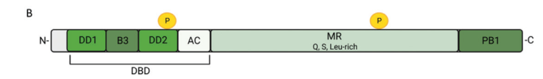

ARF5 (MONOPTEROS/MP; also known as IAA24) is a B3-domain AUXIN RESPONSE FACTOR transcription factor that acts as a sequence-specific transcriptional activator in the nuclear auxin-signaling pathway. Through its N-terminal B3-type DNA-binding domain it binds auxin response elements (AuxREs; the canonical TGTCTC motif) in the promoters of auxin-responsive genes; the DNA-binding domain also homodimerizes, enabling cooperative binding to paired AuxRE sites. Its activity is gated by the C-terminal PB1 (formerly domains III/IV) domain, which mediates dimerization with Aux/IAA repressor proteins (e.g. BODENLOS/IAA12, IAA17/AXR3, IAA19) that, together with the TOPLESS co-repressor and HDA19 histone deacetylase, hold the protein inactive in low-auxin conditions; auxin-triggered degradation of the Aux/IAA proteins releases ARF5 to activate transcription, in part by recruiting SWI/SNF chromatin-remodeling ATPases (BRAHMA/SPLAYED) that increase chromatin accessibility at target loci. ARF5 is one of a small subset of Arabidopsis ARFs that are activators rather than repressors. It is essential for embryonic apical-basal (body) axis formation and root meristem initiation, and acts throughout the life cycle in vascular strand patterning and differentiation, leaf vascular patterning, meristem maintenance, and flower primordium initiation. Direct target genes include DORNROSCHEN (DRN), LEAFY (LFY), AINTEGUMENTA (ANT), AIL6, FILAMENTOUS FLOWER (FIL) and TMO3.
Definition: A transcription regulator activity in which an auxin response factor is held transcriptionally inactive through binding of an Aux/IAA repressor protein at its PB1 domain, and is released to activate target genes upon auxin-triggered degradation of the Aux/IAA partner.
Justification: The auxin-gated activator function of ARF5 (activation contingent on Aux/IAA removal and SWI/SNF recruitment) is a distinctive regulatory mode not fully captured by existing MF terms; recorded here as a candidate for a more specific term.
Parent term: DNA-binding transcription factor activity
Supporting Evidence:
| GO Term | Evidence | Action | Reason |
|---|---|---|---|
|
GO:0003677
DNA binding
|
IEA
GO_REF:0000002 |
MODIFY |
Summary: ARF5/MP binds DNA via its N-terminal B3-type DNA-binding domain (UniProt DNA_BIND 158-260), recognizing auxin response elements. While correct, the bare "DNA binding" term is less informative than the sequence-specific DNA-binding transcription factor activity that is independently annotated and well supported for this protein.
Reason: ARF5 is a characterized sequence-specific TF that binds the AuxRE motif; the generic parent "DNA binding" should be sharpened to a sequence-specific DNA-binding term. The molecular function as an activator is captured separately by the DNA-binding transcription factor activity annotation.
Proposed replacements:
sequence-specific double-stranded DNA binding
Supporting Evidence:
PMID:24485461
We show that ARF DNA-binding domains also homodimerize to generate cooperative DNA binding, which is critical for in vivo ARF5/MP function.
file:ARATH/ARF5/ARF5-deep-research-falcon.md
containing a **B3** subdomain that recognizes AuxREs, plus additional DBD substructures that enable dimerization and cooperative binding
|
|
GO:0005634
nucleus
|
IEA
GO_REF:0000120 |
ACCEPT |
Summary: ARF5/MP is a nuclear transcription factor; UniProt curates the subcellular location as Nucleus and the cloned protein contains functional nuclear localization signals. Nuclear localization is required for its function as a transcriptional regulator.
Supporting Evidence:
PMID:9482737
The predicted protein product contains functional nuclear localization sequences and a DNA binding domain highly similar to a domain shown to bind to control elements of auxin inducible promoters.
file:ARATH/ARF5/ARF5-deep-research-falcon.md
translating auxin levels into transcriptional outputs at AuxRE-containing cis-regulatory elements
|
|
GO:0006355
regulation of DNA-templated transcription
|
IEA
GO_REF:0000002 |
ACCEPT |
Summary: ARF5/MP regulates transcription of auxin-responsive target genes. This broad process term is consistent with its role as a transcriptional activator that binds AuxREs and activates targets such as DRN, LFY and ANT. Acceptable as a general BP, though the more specific auxin-activated signaling pathway better captures its biology.
Supporting Evidence:
PMID:19369397
MP binds in vivo to two AuxRE-spanning fragments in the DRN promoter, and that MP is required for expression of DRN in cotyledon tips.
file:ARATH/ARF5/ARF5-deep-research-falcon.md
a terminal effector of the **nuclear auxin pathway (NAP)**, translating auxin levels into transcriptional outputs
|
|
GO:0009725
response to hormone
|
IEA
GO_REF:0000002 |
MARK AS OVER ANNOTATED |
Summary: This generic "response to hormone" term derives from an InterPro2GO mapping. ARF5 functions specifically in auxin response; the broad parent term over-annotates relative to the specific response to auxin / auxin-activated signaling pathway that is well established.
Reason: Too general for a protein with a well-defined and specific auxin role; the specific auxin terms (response to auxin, auxin-activated signaling pathway) are preferred.
Supporting Evidence:
PMID:12101120
Developmental responses to the plant hormone auxin are thought to be mediated by interacting pairs from two protein families
|
|
GO:0005515
protein binding
|
IPI
PMID:12101120 The Arabidopsis BODENLOS gene encodes an auxin response prot... |
REMOVE |
Summary: This interaction is the ARF5/MP-BODENLOS(IAA12) heterodimer, a functionally important interaction in which the Aux/IAA co-repressor IAA12 inhibits MP during root meristem initiation. The generic "protein binding" term is uninformative; the informative molecular function is the PB1-domain–mediated binding of an Aux/IAA co-repressor, captured by the proposed NEW GO:0019904 "protein domain specific binding" annotation. (Aux/IAA proteins lack a DNA-binding domain, so GO:0140297 "DNA-binding transcription factor binding" is not appropriate here.)
Reason: Bare "protein binding" provides no functional information and is superseded by the more specific GO:0019904 "protein domain specific binding" annotation.
Supporting Evidence:
PMID:12101120
BODENLOS and MONOPTEROS interact in the yeast two-hybrid assay and the two genes are coexpressed in early embryogenesis, suggesting that BODENLOS inhibits MONOPTEROS action in root meristem initiation.
|
|
GO:0005515
protein binding
|
IPI
PMID:14729917 MASSUGU2 encodes Aux/IAA19, an auxin-regulated protein that ... |
REMOVE |
Summary: IntAct interaction (with IAA19/O24409 and others). ARF5 binds Aux/IAA co-repressor proteins through a PB1-domain–specific interaction (its C-terminal PB1/domain III-IV). Generic "protein binding" is uninformative and is replaced by the specific GO:0019904 "protein domain specific binding" annotation.
Reason: Uninformative generic term; the meaningful function (PB1-domain–mediated binding of Aux/IAA co-repressors) is captured by GO:0019904.
Supporting Evidence:
PMID:14729917
Aux/IAA proteins can heterodimerize with the ARF proteins through interactions mediated by these conserved domains.
|
|
GO:0005515
protein binding
|
IPI
PMID:16236149 Tissue-specific expression of stabilized SOLITARY-ROOT/IAA14... |
REMOVE |
Summary: IntAct interaction with IAA14/SOLITARY-ROOT (Q38832), an Aux/IAA co-repressor. Generic "protein binding" is uninformative; the functional molecular function is PB1-domain–mediated binding of an Aux/IAA co-repressor, captured by GO:0019904 "protein domain specific binding".
Reason: Bare "protein binding" term replaced by the specific GO:0019904.
Supporting Evidence:
PMID:16236149
IAA14 interacted with ARF7 and ARF19 in yeasts.
|
|
GO:0005515
protein binding
|
IPI
PMID:21734647 The auxin signalling network translates dynamic input into r... |
REMOVE |
Summary: From the large-scale Aux/IAA-ARF interactome at the shoot apex. ARF5 is one of the ARF activators that interacts with Aux/IAA co-repressors. Generic "protein binding" is uninformative and is superseded by GO:0019904.
Reason: Uninformative; replaced by specific GO:0019904 "protein domain specific binding" annotation.
Supporting Evidence:
PMID:21734647
the Aux/IAA repressors form heterodimers with the ARF transcription factors
|
|
GO:0005515
protein binding
|
IPI
PMID:22096563 Large-scale protein-protein interaction analysis in Arabidop... |
REMOVE |
Summary: Split-luciferase interactome showing ARF5 interacts with many Aux/IAA proteins and dimerizes with other ARFs. Generic "protein binding" is uninformative; the meaningful function (PB1-domain–mediated binding of Aux/IAA co-repressors and ARF dimerization) is captured by GO:0019904 and GO:0042802.
Reason: Bare "protein binding" replaced by more specific terms.
Supporting Evidence:
PMID:22096563
the transcription activator ARF5 stood out among the tested ARFs to interact with 10 Aux/IAA proteins
|
|
GO:0005515
protein binding
|
IPI
PMID:9342315 Protein-protein interactions among the Aux/IAA proteins. |
REMOVE |
Summary: IntAct interaction with IAA1 (P49677). This is the early identification of IAA24 (=ARF5) as similar to ARF1 that heterodimerizes with Aux/IAA proteins. Generic "protein binding" is uninformative; the functional PB1-domain–mediated binding to Aux/IAA co-repressors is captured by GO:0019904.
Reason: Uninformative generic term; replaced by GO:0019904.
Supporting Evidence:
PMID:9342315
The new member IAA24 has similarity to ARF1, a transcription factor that binds to an auxin response element.
|
|
GO:0042802
identical protein binding
|
IPI
PMID:14729917 MASSUGU2 encodes Aux/IAA19, an auxin-regulated protein that ... |
ACCEPT |
Summary: ARF5/MP homodimerizes (self-interaction; IntAct P93024-P93024). Homodimerization of the DNA-binding domain is functionally important, generating cooperative binding to paired AuxRE sites that is critical for in vivo function. This specific term is informative and retained.
Supporting Evidence:
PMID:24485461
We show that ARF DNA-binding domains also homodimerize to generate cooperative DNA binding, which is critical for in vivo ARF5/MP function.
|
|
GO:0042802
identical protein binding
|
IPI
PMID:21734647 The auxin signalling network translates dynamic input into r... |
ACCEPT |
Summary: ARF5/MP self-interaction (homodimerization) detected in the shoot-apex interactome. Functionally meaningful for cooperative AuxRE binding; retained.
Supporting Evidence:
PMID:24485461
ARF1 and ARF5 homodimers, however, differ in spacing tolerated between binding sites.
|
|
GO:0042802
identical protein binding
|
IPI
PMID:22096563 Large-scale protein-protein interaction analysis in Arabidop... |
ACCEPT |
Summary: ARF5/MP homodimerization confirmed by split-luciferase complementation (ARF-ARF dimerization). Functionally relevant for cooperative DNA binding; retained.
Supporting Evidence:
PMID:22096563
a ubiquitous occurrence of ARF dimerization in plant cells
|
|
GO:0042802
identical protein binding
|
IPI
PMID:24485461 Structural basis for DNA binding specificity by the auxin-de... |
ACCEPT |
Summary: Crystal structures demonstrate that the ARF5/MP DNA-binding domain homodimerizes, and that this homodimerization generates cooperative DNA binding required in vivo. This is a structurally and functionally validated self-interaction; retained as informative.
Supporting Evidence:
PMID:24485461
We show that ARF DNA-binding domains also homodimerize to generate cooperative DNA binding, which is critical for in vivo ARF5/MP function.
file:ARATH/ARF5/ARF5-deep-research-falcon.md
For MP/ARF5, homodimerization is described as required for promoter binding and in vivo specificity.
|
|
GO:0005515
protein binding
|
IPI
PMID:26460543 Auxin-regulated chromatin switch directs acquisition of flow... |
REMOVE |
Summary: This TAIR annotation captures the interaction of MP with the SWI/SNF chromatin-remodeling ATPases BRAHMA (BRM, AT2G46020) and SPLAYED (SYD, AT2G28290). MP physically interacts with and recruits these remodelers to target loci to open chromatin for activation. Generic "protein binding" is uninformative; the functional partner class here is a chromatin-remodeling ATPase. Removed in favor of a more informative description in core functions.
Reason: Bare "protein binding" gives no functional information; the meaningful interaction (recruitment of SWI/SNF remodelers) is documented in the review and reflected in the activator function captured elsewhere.
Supporting Evidence:
PMID:26460543
the MONOPTEROS transcription factor recruits SWI/SNF chromatin remodeling ATPases to increase accessibility of the DNA for induction of key regulators of flower primordium initiation
|
|
GO:0000976
transcription cis-regulatory region binding
|
IDA
PMID:19369397 DORNROSCHEN is a direct target of the auxin response factor ... |
ACCEPT |
Summary: ChIP demonstrates that MP binds in vivo to AuxRE-containing fragments in the DORNROSCHEN (DRN) promoter, directly establishing cis-regulatory region binding. Strong direct experimental support; this is a core molecular function of ARF5.
Supporting Evidence:
PMID:19369397
Chromatin immunoprecipitation experiments show that MP binds in vivo to two AuxRE-spanning fragments in the DRN promoter, and that MP is required for expression of DRN in cotyledon tips.
|
|
GO:0000976
transcription cis-regulatory region binding
|
IPI
PMID:25533953 An Arabidopsis gene regulatory network for secondary cell wa... |
ACCEPT |
Summary: In a yeast one-hybrid gene regulatory network for secondary cell wall synthesis, ARF5 was found among transcription factors binding promoter fragments (e.g. IRX14/AT1G71930). Consistent with ARF5 binding cis-regulatory regions of target promoters. Retained as it supports the AuxRE/promoter binding molecular function, though this particular network role is peripheral.
Supporting Evidence:
PMID:25533953
a protein-DNA network between Arabidopsis thaliana transcription factors and secondary cell wall metabolic genes
|
|
GO:0005634
nucleus
|
ISM
GO_REF:0000122 |
ACCEPT |
Summary: Computational (AtSubP) prediction of nuclear localization, consistent with experimental evidence that MP carries functional NLSs and acts as a nuclear transcription factor. Accepted as a correct location.
Supporting Evidence:
PMID:9482737
The predicted protein product contains functional nuclear localization sequences
|
|
GO:0009793
embryo development ending in seed dormancy
|
IGI
PMID:17553903 AMP1 and MP antagonistically regulate embryo and meristem de... |
KEEP AS NON CORE |
Summary: mp/arf5 mutants have severe embryo patterning defects, and MP acts antagonistically with AMP1 in embryo development. This is a genuine but downstream developmental role of this pleiotropic regulator rather than its core molecular activity.
Reason: ARF5 is developmentally pleiotropic; embryo development is a downstream consequence of its transcriptional-activator function, retained as non-core.
Supporting Evidence:
PMID:17553903
mutations in MONOPTEROS (MP/ARF5) result in severe patterning defects during embryonic and postembryonic development
|
|
GO:0006355
regulation of DNA-templated transcription
|
IEP
PMID:21478855 Auxin triggers a genetic switch. |
ACCEPT |
Summary: MP controls transcription, including autoregulation of its own expression and that of its inhibitor BODENLOS, with auxin acting as a threshold trigger. Supports the broad transcription-regulation process. This duplicates the IEA GO:0006355 annotation, which is acceptable.
Supporting Evidence:
PMID:21478855
the Arabidopsis ARF protein MONOPTEROS (MP) controls its own expression and the expression of its AUX/IAA inhibitor BODENLOS (BDL)
|
|
GO:0009908
flower development
|
IGI
PMID:17553903 AMP1 and MP antagonistically regulate embryo and meristem de... |
KEEP AS NON CORE |
Summary: MP is required for flower primordium initiation and flower development; mp and auxin pathway mutants form characteristic flowerless "pin" inflorescences. This is a real downstream developmental role of this pleiotropic transcription factor.
Reason: Downstream developmental process of a pleiotropic regulator; retained as non-core.
Supporting Evidence:
PMID:26460543
In the absence of auxin or MP, shoot apices cannot initiate flower primordia and give rise to characteristic 'naked pin' inflorescences
|
|
GO:0010305
leaf vascular tissue pattern formation
|
IGI
PMID:17553903 AMP1 and MP antagonistically regulate embryo and meristem de... |
KEEP AS NON CORE |
Summary: MP is required for proper vascular patterning, including leaf venation; mp mutants show distorted vascular strands in all organs. A genuine role, kept as a non-core downstream developmental output of ARF5's transcriptional activity in provascular tissues.
Reason: Specific downstream developmental patterning role; non-core relative to the molecular activator function.
Supporting Evidence:
PMID:8904808
the vascular strands in all analyzed organs are distorted
|
|
GO:0048364
root development
|
IGI
PMID:17553903 AMP1 and MP antagonistically regulate embryo and meristem de... |
KEEP AS NON CORE |
Summary: MP is essential for root meristem initiation during embryogenesis (mp mutants fail to form hypocotyl/radicle and root meristem). A bona fide developmental role, kept as non-core for this pleiotropic factor.
Reason: Downstream developmental process; non-core.
Supporting Evidence:
PMID:12101120
monopteros mutants lacking activating ARF5 and the auxin-insensitive mutant bodenlos fail to initiate the root meristem during early embryogenesis
|
|
GO:0048507
meristem development
|
IGI
PMID:17553903 AMP1 and MP antagonistically regulate embryo and meristem de... |
KEEP AS NON CORE |
Summary: MP carves out meristematic niches by locally overcoming AMP1-dependent differentiation, antagonistically regulating meristem development. A genuine downstream developmental role of this pleiotropic regulator.
Reason: Downstream developmental process; non-core.
Supporting Evidence:
PMID:17553903
auxin-derived positional information through MP carves out meristematic niches by locally overcoming a general differentiation-promoting activity involving AMP1
|
|
GO:0003700
DNA-binding transcription factor activity
|
ISS
PMID:11118137 Arabidopsis transcription factors: genome-wide comparative a... |
ACCEPT |
Summary: ARF5/MP is a sequence-specific DNA-binding transcription factor (B3 family) that acts as a transcriptional activator at AuxREs. This is a core molecular function, strongly supported by structural, biochemical and genetic data.
Supporting Evidence:
PMID:24485461
Auxin regulates numerous plant developmental processes by controlling gene expression via a family of functionally distinct DNA-binding auxin response factors (ARFs)
|
|
GO:0003700
DNA-binding transcription factor activity
|
ISS
PMID:9482737 The Arabidopsis gene MONOPTEROS encodes a transcription fact... |
ACCEPT |
Summary: The cloning of MP established it as a transcription factor with a DNA binding domain similar to auxin-promoter-binding domains and functional NLSs. Core molecular function; duplicate of the other GO:0003700 annotations, which is acceptable.
Supporting Evidence:
PMID:9482737
a DNA binding domain highly similar to a domain shown to bind to control elements of auxin inducible promoters
|
|
GO:0005634
nucleus
|
ISS
PMID:9482737 The Arabidopsis gene MONOPTEROS encodes a transcription fact... |
ACCEPT |
Summary: MP localizes to the nucleus; the protein contains functional nuclear localization signals. Consistent with its role as a transcription factor. Accepted location (duplicate of the IEA/ISM nucleus annotations).
Supporting Evidence:
PMID:9482737
The predicted protein product contains functional nuclear localization sequences
|
|
GO:0009733
response to auxin
|
IEP
PMID:11283339 IAA17/AXR3: biochemical insight into an auxin mutant phenoty... |
ACCEPT |
Summary: ARF5/MP is a central effector of auxin response: it binds auxin response elements and, when released from Aux/IAA repression upon auxin perception, activates auxin-responsive target genes. Core to its biology; auxin response / auxin-activated signaling is its defining process.
Supporting Evidence:
PMID:11283339
the ARFs are capable of binding synthetic and natural auxin responsive promoter elements through a VP1-B3 DNA binding domain located at their N termini
file:ARATH/ARF5/ARF5-deep-research-falcon.md
MP/ARF5 is a **nuclear auxin-dependent transcriptional activator** that binds AuxREs and drives developmental gene programs.
|
|
GO:0009942
longitudinal axis specification
|
IMP
PMID:8904808 Studies on the role of the Arabidopsis gene MONOPTEROS in va... |
KEEP AS NON CORE |
Summary: mp mutant embryos fail to initiate the hypocotyl/root (body) axis; MP is required for apical-basal axis formation in the early embryo. This is the classic mp loss-of-function phenotype and a well-supported downstream developmental role. Kept as non-core relative to the molecular activator function.
Reason: Strongly supported developmental patterning role, but a downstream output of the transcriptional-activator activity in a pleiotropic gene.
Supporting Evidence:
PMID:8904808
The process depends on the activity of the gene MONOPTEROS (MP); mp mutant embryos fail to produce hypocotyl and radicle.
|
|
GO:0010051
xylem and phloem pattern formation
|
IMP
PMID:8904808 Studies on the role of the Arabidopsis gene MONOPTEROS in va... |
KEEP AS NON CORE |
Summary: mp mutants show distorted vascular strands in all organs at all stages; MP is required for vascular tissue patterning and continuity. A well-supported downstream developmental role of this pleiotropic regulator.
Reason: Genuine, strongly supported vascular patterning role; non-core relative to the molecular function.
Supporting Evidence:
PMID:8904808
the vascular strands in all analyzed organs are distorted
|
|
GO:0003700
DNA-binding transcription factor activity
|
TAS
PMID:9482737 The Arabidopsis gene MONOPTEROS encodes a transcription fact... |
ACCEPT |
Summary: Author-stated (TAS) assignment of DNA-binding transcription factor activity from the MP cloning paper. Core molecular function; duplicate of the ISS GO:0003700 annotations, which is acceptable.
Supporting Evidence:
PMID:9482737
The Arabidopsis gene MONOPTEROS encodes a transcription factor mediating embryo axis formation and vascular development.
|
|
GO:0019904
protein domain specific binding
|
IPI
PMID:12101120 The Arabidopsis BODENLOS gene encodes an auxin response prot... |
NEW |
Summary: NEW annotation. ARF5/MP binds Aux/IAA repressor proteins through a PB1-domain–mediated interaction: the C-terminal PB1 (domain III/IV) domain of ARF5 binds the PB1 domain of Aux/IAA proteins. Documented partners include BODENLOS/IAA12 (PMID:12101120), IAA17/AXR3 (PMID:11283339) and IAA19 plus other Aux/IAAs (PMID:22096563, PMID:21734647). Aux/IAA proteins are transcriptional co-repressors that lack a DNA-binding domain, so the partner-specific term GO:0140297 "DNA-binding transcription factor binding" is not appropriate; the PB1-domain–specific interaction is instead captured by GO:0019904 "protein domain specific binding". This informative molecular function replaces the multiple generic GO:0005515 "protein binding" annotations and captures the specific interaction class (Aux/IAA co-repressor binding) through which ARF5 activity is gated by auxin.
Supporting Evidence:
PMID:12101120
BODENLOS and MONOPTEROS interact in the yeast two-hybrid assay and the two genes are coexpressed in early embryogenesis, suggesting that BODENLOS inhibits MONOPTEROS action in root meristem initiation.
PMID:11283339
heterodimerization of the revertant forms of IAA17/AXR3 with IAA3/SHY2, another Aux/IAA protein, and ARF1 or ARF5/MP proteins is affected only by changes in domain III.
file:ARATH/ARF5/ARF5-deep-research-falcon.md
a C-terminal PB1 domain for ARF–ARF and ARF–Aux/IAA interactions
|
|
GO:0009734
auxin-activated signaling pathway
|
IMP
PMID:26460543 Auxin-regulated chromatin switch directs acquisition of flow... |
NEW |
Summary: NEW annotation. ARF5/MP is the transcriptional effector of the nuclear auxin-activated signaling pathway: auxin triggers degradation of Aux/IAA repressors bound to MP, releasing MP to activate target genes (including via recruitment of SWI/SNF chromatin remodelers). This process is captured by the UniProt keyword "Auxin signaling pathway" (GO:0009734, IEA:UniProtKB-KW in the UniProt record) and is the defining biological process for ARF5.
Supporting Evidence:
PMID:26460543
Upon auxin sensing, the MONOPTEROS transcription factor recruits SWI/SNF chromatin remodeling ATPases to increase accessibility of the DNA for induction of key regulators of flower primordium initiation.
PMID:21478855
auxin acting as a threshold-specific trigger by promoting the degradation of the inhibitor
file:ARATH/ARF5/ARF5-deep-research-falcon.md
Increased auxin promotes **TIR1/AFB-mediated Aux/IAA degradation**, releasing MP/ARF5 to activate transcription
|
Q: Does ARF5/MP function as a classical transcription coactivator recruiter (via SWI/SNF) at all target loci, or does it primarily act through direct AuxRE binding and activation domain activity?
Q: Which of ARF5's developmental roles (embryo axis, vascular patterning, flower primordium initiation) reflect distinct sets of direct target genes versus the same core regulatory module deployed in different tissues?
The research report should be a detailed narrative explaining the function, biological processes, and localization of the gene product. Citations should be given for all claims.
You should prioritize authoritative reviews and primary scientific literature when conducting research. You can supplement
this with annotations you find in gene/protein databases, but these can be outdated or inaccurate.
We are specifically interested in the primary function of the gene - for enzymes, what reaction is catalyzed, and what is the substrate specificity? For transporters, what is the substrate? For structural proteins or adapters, what is the broader structural role? For signaling molecules, what is the role in the pathway.
We are interested in where in or outside the cell the gene product carries out its function.
We are also interested in the signaling or biochemical pathways in which the gene functions. We are less interested in broad pleiotropic effects, except where these elucidate the precise role.
Include evidence where possible. We are interested in both experimental evidence as well as inference from structure, evolution, or bioinformatic analysis. Precise studies should be prioritized over high-throughput, where available.
Auxin response factor 5 (ARF5), best known as MONOPTEROS (MP), is an A-class nuclear transcription factor that acts as a central output node of the canonical/nuclear auxin signaling pathway. MP/ARF5 binds specific auxin response elements (AuxREs) in DNA and is repressed by Aux/IAA proteins (notably BDL/IAA12) at low auxin. Increased auxin promotes TIR1/AFB-mediated Aux/IAA degradation, releasing MP/ARF5 to activate transcription, often coupled to chromatin remodeling (SWI/SNF remodelers BRM/SYD) and histone acetylation activities recruited via transcriptional cofactors. MP/ARF5 is essential for embryogenesis and vascular patterning and is widely used as a module for synthetic auxin-responsive gene circuits and inducible genetic tools in plant research. (wojcikowska2023gameofthrones pages 6-7, wojcikowska2023gameofthrones pages 4-5, rienstra2023tobindor pages 1-3)
The target protein is Arabidopsis thaliana ARF5 (gene At1g19850), synonymous with MONOPTEROS (MP), a canonical member of the AUXIN RESPONSE FACTOR (ARF) family. Recent authoritative reviews explicitly use the combined designation MP/ARF5 (MONOPTEROS/AUXIN RESPONSE FACTOR 5) and describe its canonical ARF architecture. (wojcikowska2023gameofthrones pages 6-7, wojcikowska2023gameofthrones pages 1-2)
ARF5/MP is a sequence-specific DNA-binding transcription factor functioning in the nucleus as a terminal effector of the nuclear auxin pathway (NAP), translating auxin levels into transcriptional outputs at AuxRE-containing cis-regulatory elements. (wojcikowska2023gameofthrones pages 1-2, rienstra2023tobindor pages 1-3)
Canonical ARFs—including MP/ARF5—are modular proteins with three major regions:
Visual evidence. A figure panel summarizing MP domain architecture and a figure panel summarizing the nuclear auxin signaling module (MP repression by BDL/IAA12 and derepression via TIR1/AFB) were retrieved from an authoritative review. (wojcikowska2023gameofthrones media 28ff2f5c, wojcikowska2023gameofthrones media bee4ef37)
A key organizing concept is that Aux/IAA proteins are transcriptional co-repressors that bind ARFs (via PB1–PB1 interactions), and auxin promotes TIR1/AFB–Aux/IAA association, leading to Aux/IAA ubiquitination and proteasomal degradation, thereby releasing ARFs to regulate transcription. (rienstra2023tobindor pages 1-3)
For MP specifically, BDL/IAA12 represses MP/ARF5 at low auxin by recruiting co-repressors TOPLESS/TPL (and TPRs) and HDA19, maintaining a repressive chromatin state; increased auxin triggers TIR1–BDL/IAA12 co-receptor-mediated degradation of BDL/IAA12 and activation of MP-dependent transcription. (wojcikowska2023gameofthrones pages 6-7, wojcikowska2023gameofthrones pages 4-5)
ARF binding is often described around the TGTCNN AuxRE core motif, with high affinity reported for TGTCGG in multiple sources. For MP/ARF5 specifically, preference for 5ʹ-TGTCGG-3ʹ over the canonical 5ʹ-TGTCTC-3ʹ is reported. (wojcikowska2023gameofthrones pages 4-4, rienstra2023tobindor pages 1-3)
A critical refinement is that ARFs frequently bind paired AuxREs with orientation/spacing constraints (IR/DR/ER elements); MP/ARF5 shows strong affinity for specific spacings (e.g., IR7–8 and IR18; DR4–5 and others), highlighting that cis-regulatory “grammar” contributes to MP target selection. (wojcikowska2023gameofthrones pages 4-5)
MP/ARF5 transcriptional activation is coupled to chromatin regulation, including physical association with chromatin-remodeling complexes containing BRM and SYD and histone acetylases. (wojcikowska2023gameofthrones pages 6-7)
Additionally, MP can cooperate with other transcription factors such as bZIP11, which can recruit the SAGA acetyltransferase complex to acetylate nearby histones and open chromatin for transcription. (wojcikowska2023gameofthrones pages 5-6)
A 2023 Journal of Experimental Botany review consolidates MP/ARF5 research, while emphasizing key unknowns that represent expert consensus on current limitations: incomplete knowledge of MP complexes, direct targets, and upstream/epigenetic regulators, and limited information on post-translational modifications and their functional consequences. (wojcikowska2023gameofthrones pages 1-2)
A high-impact 2024 Nature Communications study reconstructs ARF evolutionary history and reports that the ARF DNA-binding fold shares origin with a conserved eukaryotic chromatin regulator, proposing that regions of the ARF DBD (DD–AD) likely originated from a PHIP-related crypto-Tudor domain. This reframes ARF structure/function in a broader chromatin-centric evolutionary context and helps rationalize how diversification of ARF domains could underlie functional divergence among ARF classes. (hernandezgarcia2024evolutionaryoriginsand pages 1-2)
A 2024 bioRxiv preprint systematically mines Arabidopsis promoters and proposes that composite cis-elements (AuxRE plus a coupling motif) are enriched in auxin-responsive genes. The work supports a mechanism in which ARF–non-ARF TF complexes recognize composite motifs, expanding the classic view of AuxRE-only control. The preprint also notes examples where GBF factors bind ARF5 to modulate vascular gene expression, reinforcing the idea that MP outputs depend on combinatorial TF partnerships. (novikova2024mechanismofauxindependent pages 1-4)
A 2024 study in Plants compiles ARF binding datasets (including DAP-seq for ARF5/ARF2 and ChIP-seq for multiple ARFs) and reconstructs an auxin-induced transcription factor regulatory network. A key quantitative inference is that primary TF targets account for only ~20–30% of auxin-responsive DEGs, implying that MP/ARF5 and other ARFs initiate broad gene-expression cascades via downstream TFs (e.g., TMO5/TMO6, DOF5.8, LBD16/29). (omelyanchuk2024computationalreconstructionof pages 1-2)
A 2023 PNAS study transplanted an ARF5/MP-centered auxin feedback circuit into Saccharomyces cerevisiae. The authors built a synthetic auxin-responsive promoter (psynAUX) based on MP binding sites and used auxin-dependent degradation of an Aux/IAA repressor (BDL/IAA12 variants) to tune dynamics. Reported behaviors include nearly 10-fold MP-dependent reporter induction with low leak and pulse-processing behaviors including a “once per three pulses” response under certain dynamic contexts. (avdovic2023dynamiccontextdependentregulation pages 1-2)
In microfluidic pulsing experiments, coordinated gene-expression contexts yielded ~6-hour periods for 2-hour auxin pulses, with population-level replication (e.g., n = 16 populations each with >1,000 cells; and broader distributions in other contexts, n = 26, with periods extending to 10–14 hours). (avdovic2023dynamiccontextdependentregulation pages 2-3)
A comprehensive MP/ARF5 review catalogs extensive toolsets used in planta, including MP truncations (e.g., PB1-deleted variants), glucocorticoid receptor fusions (GR), β-estradiol/XVE-inducible systems, and reporter-coupled constructs in Arabidopsis backgrounds (e.g., DR5rev::GFP). These are widely used to dissect MP function and to implement conditional auxin-response behaviors in developmental experiments. (wojcikowska2023gameofthrones pages 7-7)
Recent reviews summarize crop-relevant ARF interventions, emphasizing that ARF/IAA modules are modular “levers” for traits including architecture and stress tolerance. For example, ARF overexpression in rice can influence leaf angle via direct target activation, and ARF/Aux-IAA modules influence nutrient-stress responses (e.g., low-phosphate tolerance via IAA14–ARF7/19 module). While these are not MP/ARF5 itself, they motivate translational use of MP-like activator ARFs and conserved auxin transcriptional modules. (liu2024enigmaticroleof pages 11-12)
A 2023 MP/ARF5-focused review also highlights specific crop-facing outcomes in ARF5 ortholog contexts, including an ARF5 ortholog (MdARF5) that activates ethylene biosynthetic genes to initiate apple fruit ripening, and a sweet potato ortholog (IbARF5) that—when expressed in Arabidopsis—enhanced carotenoid biosynthesis and salt/drought tolerance, illustrating practical trait modulation using ARF5-class regulators. (wojcikowska2023gameofthrones pages 18-18, wojcikowska2023gameofthrones pages 15-16)
The 2023 JEB MP/ARF5 review provides an expert synthesis and explicitly frames remaining “big questions”: the full composition of MP complexes, the complete set of direct target genes, and upstream epigenetic regulators remain incompletely defined; post-translational modification knowledge is described as marginal and consequences are poorly understood. This signals that while the core NAP mechanism is robust, MP-specific regulatory layers are still actively developing. (wojcikowska2023gameofthrones pages 1-2)
A 2023 JEB review focused on ARF target selection emphasizes that DNA motif presence alone is insufficient: ARF domain architecture (DBD dimerization, PB1-mediated oligomerization), motif spacing/orientation, and regulation of ARF levels collectively determine which genes become auxin responsive. This perspective supports current consensus that MP output is an emergent property of cis-element grammar and protein-network context. (rienstra2023tobindor pages 1-3)
Quantitative summary reported in a 2023 MP/ARF5 review:
Two quantitative comparisons reported:
These results support a model where PB1 contributes to MP’s auxin responsiveness and limits promiscuous binding, while PB1 deletion yields broader, largely auxin-insensitive occupancy. (wojcikowska2023gameofthrones pages 5-6)
In yeast reconstitution:
| Category | Key points | Evidence |
|---|---|---|
| Identity/domains | ARF5 in Arabidopsis thaliana is MONOPTEROS (MP), a canonical A-class ARF transcription factor. It has an N-terminal DNA-binding domain with B3 and dimerization subdomains, a Q/S/L-rich middle region consistent with activator function, and a C-terminal PB1 domain for ARF–ARF and ARF–Aux/IAA interactions; an alternative isoform (MP11ir) lacks PB1. It acts in the nucleus as part of the nuclear auxin pathway. (wojcikowska2023gameofthrones pages 3-4, wojcikowska2023gameofthrones pages 4-4, rienstra2023tobindor pages 1-3) | Wójcikowska et al. 2023, J Exp Bot, https://doi.org/10.1093/jxb/erad272; Rienstra et al. 2023, J Exp Bot, https://doi.org/10.1093/jxb/erad259 |
| Core mechanism | At low auxin, BDL/IAA12 binds MP/ARF5 and recruits TPL/TPR co-repressors and HDA19 to maintain repression. At high auxin, auxin promotes TIR1/AFB–Aux/IAA interaction, causing Aux/IAA ubiquitination and proteasomal degradation, which derepresses MP/ARF5. Activated MP/ARF5 then associates with chromatin remodelers and histone acetylation machinery to induce transcription. (wojcikowska2023gameofthrones pages 6-7, wojcikowska2023gameofthrones pages 4-5, rienstra2023tobindor pages 1-3) | Wójcikowska et al. 2023, J Exp Bot, https://doi.org/10.1093/jxb/erad272; Rienstra et al. 2023, J Exp Bot, https://doi.org/10.1093/jxb/erad259 |
| DNA-binding specifics | ARFs recognize AuxRE core motifs of the form TGTCNN; for ARF5-family binding, TGTCGG is reported as a preferred high-affinity motif over canonical TGTCTC. Binding is promoted by dimerization and by spacing/orientation of paired motifs, including inverted, direct, and everted repeats; DBD-mediated cooperative binding to IR7 is a key structural paradigm. (wojcikowska2023gameofthrones pages 4-4, rienstra2023tobindor pages 1-3, novikova2024mechanismofauxindependent pages 1-4) | Wójcikowska et al. 2023, J Exp Bot, https://doi.org/10.1093/jxb/erad272; Rienstra et al. 2023, J Exp Bot, https://doi.org/10.1093/jxb/erad259; Novikova et al. 2024, bioRxiv, https://doi.org/10.1101/2024.07.16.603724 |
| Key cofactors/chromatin | MP/ARF5 function is coupled to chromatin regulation. Reported cofactors include BRM and SYD SWI/SNF remodelers, histone acetylases, and bZIP11, which can recruit the SAGA acetyltransferase complex to nearby chromatin. These interactions support chromatin opening and transcriptional activation at auxin-responsive loci. (wojcikowska2023gameofthrones pages 5-6, wojcikowska2023gameofthrones pages 6-7, wojcikowska2023gameofthrones pages 4-5, wojcikowska2023gameofthrones pages 12-13) | Wójcikowska et al. 2023, J Exp Bot, https://doi.org/10.1093/jxb/erad272 |
| Biological roles | MP/ARF5 is a central developmental regulator controlling embryogenesis, vascularization, leaf/provascular patterning, meristem formation, inflorescence development, and primary root processes. Direct targets and pathways mentioned in the evidence include TMO5/TMO6, DOF5.8, LBD genes, and miR390, consistent with roles in tissue patterning and auxin-mediated developmental gene networks. (wojcikowska2023gameofthrones pages 12-13, wojcikowska2023gameofthrones pages 15-16, omelyanchuk2024computationalreconstructionof pages 1-2, liu2024enigmaticroleof pages 7-8) | Wójcikowska et al. 2023, J Exp Bot, https://doi.org/10.1093/jxb/erad272; Omelyanchuk et al. 2024, Plants, https://doi.org/10.3390/plants13141905; Liu et al. 2024, Front Plant Sci, https://doi.org/10.3389/fpls.2024.1398818 |
| Recent 2024 developments | 2024 work extended ARF understanding beyond classical genetics: ARF domain evolution was traced to a chromatin regulator-related fold, supporting deeper structural links between ARFs and chromatin-associated protein architecture. New promoter analyses proposed composite AuxRE-based cis-elements recognized by ARF plus partner TFs, including cases involving ARF5-associated GBF factors. Network reconstruction studies also refined the distinction between primary ARF targets and downstream transcriptional subnetworks. (hernandezgarcia2024evolutionaryoriginsand pages 1-2, novikova2024mechanismofauxindependent pages 1-4, omelyanchuk2024computationalreconstructionof pages 1-2) | Hernández-García et al. 2024, Nat Commun, https://doi.org/10.1038/s41467-024-55278-8; Novikova et al. 2024, bioRxiv, https://doi.org/10.1101/2024.07.16.603724; Omelyanchuk et al. 2024, Plants, https://doi.org/10.3390/plants13141905 |
| Applications/implementations | ARF5/MP has been reconstituted in synthetic auxin circuits in yeast with IAA12/BDL and TIR1, enabling controlled reporter outputs under microfluidic auxin pulses. ARF5-derived engineered variants lacking PB1 show altered, more auxin-insensitive DNA binding, highlighting a tunable design lever for synthetic biology. ARF modules are also discussed as engineering targets for crop traits such as architecture, nutrient responses, and regeneration. (avdovic2023dynamiccontextdependentregulation pages 1-2, wojcikowska2023gameofthrones pages 5-6, wojcikowska2023gameofthrones pages 7-7, liu2024enigmaticroleof pages 11-12, wojcikowska2023gameofthrones pages 18-18) | Avdovic et al. 2023, PNAS, https://doi.org/10.1073/pnas.2309007120; Wójcikowska et al. 2023, J Exp Bot, https://doi.org/10.1093/jxb/erad272; Liu et al. 2024, Front Plant Sci, https://doi.org/10.3389/fpls.2024.1398818 |
| Quantitative statistics | Reported quantitative details include: AuxREs in promoters of 11,092 genes; ~4,585 direct MP/ARF5 targets; wild-type MP/ARF5 bound 258 promoters in one dataset versus PB1-deleted MPΔ binding 3,405; another summary cites 339 MP-bound targets versus 3,404 with MPΔ in the presence of IAA (3,970 without IAA), with 3,047 MPΔ interactions auxin-insensitive. In synthetic yeast circuits, MP-dependent induction was nearly 10-fold, and coordinated oscillatory responses were measured across 16 populations with ~6 h periods under 2 h auxin pulses. (wojcikowska2023gameofthrones pages 4-5, wojcikowska2023gameofthrones pages 5-6, avdovic2023dynamiccontextdependentregulation pages 1-2, avdovic2023dynamiccontextdependentregulation pages 2-3) | Wójcikowska et al. 2023, J Exp Bot, https://doi.org/10.1093/jxb/erad272; Avdovic et al. 2023, PNAS, https://doi.org/10.1073/pnas.2309007120 |
Table: This table compacts the main functional annotation points for Arabidopsis ARF5/MONOPTEROS (UniProt P93024), including identity, mechanism, DNA binding, chromatin partners, biological roles, recent 2024 advances, applications, and quantitative findings. It is useful as a citation-backed summary for downstream narrative reporting.
References
(wojcikowska2023gameofthrones pages 6-7): Barbara Wójcikowska, Samia Belaidi, and Hélène S Robert. Game of thrones among auxin response factors—over 30 years of monopteros research. Journal of Experimental Botany, 74:6904-6921, Aug 2023. URL: https://doi.org/10.1093/jxb/erad272, doi:10.1093/jxb/erad272. This article has 21 citations and is from a domain leading peer-reviewed journal.
(wojcikowska2023gameofthrones pages 4-5): Barbara Wójcikowska, Samia Belaidi, and Hélène S Robert. Game of thrones among auxin response factors—over 30 years of monopteros research. Journal of Experimental Botany, 74:6904-6921, Aug 2023. URL: https://doi.org/10.1093/jxb/erad272, doi:10.1093/jxb/erad272. This article has 21 citations and is from a domain leading peer-reviewed journal.
(rienstra2023tobindor pages 1-3): Juriaan Rienstra, Jorge Hernández-García, and Dolf Weijers. To bind or not to bind: how auxin response factors select their target genes. Journal of Experimental Botany, 74:6922-6932, Jul 2023. URL: https://doi.org/10.1093/jxb/erad259, doi:10.1093/jxb/erad259. This article has 39 citations and is from a domain leading peer-reviewed journal.
(wojcikowska2023gameofthrones pages 1-2): Barbara Wójcikowska, Samia Belaidi, and Hélène S Robert. Game of thrones among auxin response factors—over 30 years of monopteros research. Journal of Experimental Botany, 74:6904-6921, Aug 2023. URL: https://doi.org/10.1093/jxb/erad272, doi:10.1093/jxb/erad272. This article has 21 citations and is from a domain leading peer-reviewed journal.
(wojcikowska2023gameofthrones pages 4-4): Barbara Wójcikowska, Samia Belaidi, and Hélène S Robert. Game of thrones among auxin response factors—over 30 years of monopteros research. Journal of Experimental Botany, 74:6904-6921, Aug 2023. URL: https://doi.org/10.1093/jxb/erad272, doi:10.1093/jxb/erad272. This article has 21 citations and is from a domain leading peer-reviewed journal.
(wojcikowska2023gameofthrones pages 3-4): Barbara Wójcikowska, Samia Belaidi, and Hélène S Robert. Game of thrones among auxin response factors—over 30 years of monopteros research. Journal of Experimental Botany, 74:6904-6921, Aug 2023. URL: https://doi.org/10.1093/jxb/erad272, doi:10.1093/jxb/erad272. This article has 21 citations and is from a domain leading peer-reviewed journal.
(wojcikowska2023gameofthrones media 28ff2f5c): Barbara Wójcikowska, Samia Belaidi, and Hélène S Robert. Game of thrones among auxin response factors—over 30 years of monopteros research. Journal of Experimental Botany, 74:6904-6921, Aug 2023. URL: https://doi.org/10.1093/jxb/erad272, doi:10.1093/jxb/erad272. This article has 21 citations and is from a domain leading peer-reviewed journal.
(wojcikowska2023gameofthrones media bee4ef37): Barbara Wójcikowska, Samia Belaidi, and Hélène S Robert. Game of thrones among auxin response factors—over 30 years of monopteros research. Journal of Experimental Botany, 74:6904-6921, Aug 2023. URL: https://doi.org/10.1093/jxb/erad272, doi:10.1093/jxb/erad272. This article has 21 citations and is from a domain leading peer-reviewed journal.
(wojcikowska2023gameofthrones pages 5-6): Barbara Wójcikowska, Samia Belaidi, and Hélène S Robert. Game of thrones among auxin response factors—over 30 years of monopteros research. Journal of Experimental Botany, 74:6904-6921, Aug 2023. URL: https://doi.org/10.1093/jxb/erad272, doi:10.1093/jxb/erad272. This article has 21 citations and is from a domain leading peer-reviewed journal.
(hernandezgarcia2024evolutionaryoriginsand pages 1-2): Jorge Hernández-García, Vanessa Polet Carrillo-Carrasco, Juriaan Rienstra, Keita Tanaka, Martijn de Roij, Melissa Dipp-Álvarez, Alejandra Freire-Ríos, Isidro Crespo, Roeland Boer, Willy A. M. van den Berg, Simon Lindhoud, and Dolf Weijers. Evolutionary origins and functional diversification of auxin response factors. Nature Communications, Dec 2024. URL: https://doi.org/10.1038/s41467-024-55278-8, doi:10.1038/s41467-024-55278-8. This article has 37 citations and is from a highest quality peer-reviewed journal.
(novikova2024mechanismofauxindependent pages 1-4): Daria D. Novikova, Nadya Omelyanchuk, Anastasiia Korosteleva, Catherine Albrecht, Viktoriya V. Lavrekha, Dolf Weijers, and Victoria Mironova. Mechanism of auxin-dependent gene regulation through composite auxin response elements. bioRxiv, Jul 2024. URL: https://doi.org/10.1101/2024.07.16.603724, doi:10.1101/2024.07.16.603724. This article has 5 citations.
(omelyanchuk2024computationalreconstructionof pages 1-2): Nadya A. Omelyanchuk, Viktoriya V. Lavrekha, Anton G. Bogomolov, Vladislav A. Dolgikh, Aleksandra D. Sidorenko, and Elena V. Zemlyanskaya. Computational reconstruction of the transcription factor regulatory network induced by auxin in arabidopsis thaliana l. Jul 2024. URL: https://doi.org/10.3390/plants13141905, doi:10.3390/plants13141905. This article has 4 citations.
(avdovic2023dynamiccontextdependentregulation pages 1-2): Merisa Avdovic, Mario Garcia-Navarrete, Diego Ruiz-Sanchis, and Krzysztof Wabnik. Dynamic context-dependent regulation of auxin feedback signaling in synthetic gene circuits. Proceedings of the National Academy of Sciences of the United States of America, Oct 2023. URL: https://doi.org/10.1073/pnas.2309007120, doi:10.1073/pnas.2309007120. This article has 4 citations and is from a highest quality peer-reviewed journal.
(avdovic2023dynamiccontextdependentregulation pages 2-3): Merisa Avdovic, Mario Garcia-Navarrete, Diego Ruiz-Sanchis, and Krzysztof Wabnik. Dynamic context-dependent regulation of auxin feedback signaling in synthetic gene circuits. Proceedings of the National Academy of Sciences of the United States of America, Oct 2023. URL: https://doi.org/10.1073/pnas.2309007120, doi:10.1073/pnas.2309007120. This article has 4 citations and is from a highest quality peer-reviewed journal.
(wojcikowska2023gameofthrones pages 7-7): Barbara Wójcikowska, Samia Belaidi, and Hélène S Robert. Game of thrones among auxin response factors—over 30 years of monopteros research. Journal of Experimental Botany, 74:6904-6921, Aug 2023. URL: https://doi.org/10.1093/jxb/erad272, doi:10.1093/jxb/erad272. This article has 21 citations and is from a domain leading peer-reviewed journal.
(liu2024enigmaticroleof pages 11-12): Ling Liu, Baba Salifu Yahaya, Jing Li, and Fengkai Wu. Enigmatic role of auxin response factors in plant growth and stress tolerance. Frontiers in Plant Science, Jun 2024. URL: https://doi.org/10.3389/fpls.2024.1398818, doi:10.3389/fpls.2024.1398818. This article has 61 citations.
(wojcikowska2023gameofthrones pages 18-18): Barbara Wójcikowska, Samia Belaidi, and Hélène S Robert. Game of thrones among auxin response factors—over 30 years of monopteros research. Journal of Experimental Botany, 74:6904-6921, Aug 2023. URL: https://doi.org/10.1093/jxb/erad272, doi:10.1093/jxb/erad272. This article has 21 citations and is from a domain leading peer-reviewed journal.
(wojcikowska2023gameofthrones pages 15-16): Barbara Wójcikowska, Samia Belaidi, and Hélène S Robert. Game of thrones among auxin response factors—over 30 years of monopteros research. Journal of Experimental Botany, 74:6904-6921, Aug 2023. URL: https://doi.org/10.1093/jxb/erad272, doi:10.1093/jxb/erad272. This article has 21 citations and is from a domain leading peer-reviewed journal.
(wojcikowska2023gameofthrones pages 12-13): Barbara Wójcikowska, Samia Belaidi, and Hélène S Robert. Game of thrones among auxin response factors—over 30 years of monopteros research. Journal of Experimental Botany, 74:6904-6921, Aug 2023. URL: https://doi.org/10.1093/jxb/erad272, doi:10.1093/jxb/erad272. This article has 21 citations and is from a domain leading peer-reviewed journal.
(liu2024enigmaticroleof pages 7-8): Ling Liu, Baba Salifu Yahaya, Jing Li, and Fengkai Wu. Enigmatic role of auxin response factors in plant growth and stress tolerance. Frontiers in Plant Science, Jun 2024. URL: https://doi.org/10.3389/fpls.2024.1398818, doi:10.3389/fpls.2024.1398818. This article has 61 citations.

UniProt: P93024 (ARFE_ARATH). Gene: ARF5; synonyms IAA24, MP; locus At1g19850. 902 aa.
ARF5/MONOPTEROS is a B3-domain AUXIN RESPONSE FACTOR (ARF) transcription factor that functions as a
sequence-specific transcriptional activator. It binds auxin response elements (AuxREs; the
5'-TGTCTC-3' motif) in the promoters of auxin-responsive genes and activates their transcription.
ARF5 is one of only ~5 of the 23 Arabidopsis ARFs that act as transcriptional activators (the rest are
repressors) PMID:21734647.
It is essential for embryonic apical-basal axis (body axis) formation, root meristem initiation, and
vascular patterning, and acts post-embryonically in vascular development, leaf vascular patterning,
flower primordium initiation, and meristem maintenance.
ARF5 forms homodimers and heterodimers with Aux/IAA repressors.
- Interacts with IAA12/BODENLOS (BDL) — Y2H, inhibits MP in root meristem initiation
PMID:12101120.
- Interacts with IAA17/AXR3 (heterodimerization via domain III) PMID:11283339.
- IntAct: IAA1 (P49677), IAA12 (Q38830), IAA13 (Q38831), IAA14 (Q38832), IAA19 (O24409), self (P93024).
- Large-scale interactome confirms ARF5 interacts with many Aux/IAAs and homodimerizes [PMID:22096563 "the transcription activator ARF5 stood out among the tested ARFs to interact with 10 Aux/IAA proteins"; PMID:21734647].
- IAA19 (MSG2) interaction reported in PMID:14729917 context (ARF-Aux/IAA interaction via CTD; this paper is primarily on ARF7/NPH4 but IntAct used it for ARF5-IAA19).
- IAA14/SLR interaction context PMID:16236149 (IntAct, Q38832).
- Self-dimerization / identical protein binding [PMID:24485461 (structural homodimer), PMID:21734647, PMID:22096563].
Note: GO:0005515 "protein binding" annotations all derive from these IntAct/TAIR interaction datasets.
These are mostly Aux/IAA repressors. Per curation guidelines, bare "protein binding" is uninformative;
the informative MF is GO:0140297 "DNA-binding transcription factor binding" (ARF5 binds Aux/IAA
transcriptional repressors / co-binds with chromatin remodelers) and GO:0042802 "identical protein
binding" (homodimerization is functionally meaningful for DNA binding per PMID:24485461).
PMID:26460543 protein-binding annotation: MP recruits SWI/SNF chromatin remodeling ATPases (BRM/SYD)
PMID:26460543. The TAIR annotation links AT2G28290 (SYD) and AT2G46020 (BRM).
In low auxin, Aux/IAA proteins (e.g. BDL/IAA12) bound to the MP C-terminal domain recruit TOPLESS
co-repressor and HDA19 histone deacetylase, blocking activation; auxin triggers Aux/IAA degradation,
freeing MP and allowing SWI/SNF recruitment PMID:26460543. MP autoregulates its own expression and
that of BDL PMID:21478855.
GO:0009942 (longitudinal axis specification) and GO:0010051 (xylem/phloem pattern formation) are the
classic mp loss-of-function phenotypes (Przemeck 1996) — strong IMP support.
Core MF: sequence-specific DNA-binding transcriptional activator acting at AuxRE elements (auxin-activated).
Core BP: auxin-activated signaling pathway controlling embryonic axis/vascular/meristem patterning.
Core CC: nucleus.
NEW: GO:0140297 DNA-binding transcription factor binding (binds Aux/IAA repressors); GO:0001228 / activator-class
RNA Pol II activity considered but GO:0003700 already captures activator TF activity. Add
GO:0009734 auxin-activated signaling pathway (in UniProt DR line, IEA:UniProtKB-KW) — but this is not in GOA tsv,
so add as NEW with KW support.
The Falcon deep-research report (file:ARATH/ARF5/ARF5-deep-research-falcon.md) fully corroborates the
existing review and adds recent (2023-2024) mechanistic context; it did not surface any evidence that
weakens prior decisions, and no UNDECIDED annotations were present to resolve.
Key corroborating points used as supported_by evidence:
- Core identity/function: "MP/ARF5 is a nuclear auxin-dependent transcriptional activator that binds
AuxREs and drives developmental gene programs." Acts "in the nucleus as a terminal effector of the
nuclear auxin pathway (NAP), translating auxin levels into transcriptional outputs at
AuxRE-containing cis-regulatory elements." Supports GO:0003700, GO:0005634, GO:0006355, GO:0009733.
- DNA binding via B3: DBD "containing a B3 subdomain that recognizes AuxREs, plus additional DBD
substructures that enable dimerization and cooperative binding." Supports GO:0003677 MODIFY rationale.
- Homodimerization: "For MP/ARF5, homodimerization is described as required for promoter binding and in
vivo specificity." Supports GO:0042802.
- Auxin gating / NAP mechanism: "Increased auxin promotes TIR1/AFB-mediated Aux/IAA degradation,
releasing MP/ARF5 to activate transcription." "At low auxin, BDL/IAA12 binds MP/ARF5 and recruits
TPL/TPR co-repressors and HDA19 to maintain repression." Supports GO:0009734 (NEW) and the
GO:0140297 Aux/IAA-binding core function.
- Chromatin coupling: "Activated MP/ARF5 then associates with chromatin remodelers and histone
acetylation machinery to induce transcription" (BRM/SYD SWI/SNF remodelers). Supports the
cis-regulatory binding core function and the proposed_new_term rationale.
- PB1-mediated interactions: "a C-terminal PB1 domain for ARF–ARF and ARF–Aux/IAA interactions."
Supports GO:0140297 (NEW).
Additional context noted but not annotated (no verifiable GO ID / outside GOA scope): ARF5 prefers the
5'-TGTCGG-3' AuxRE over canonical TGTCTC and binds paired AuxREs with spacing/orientation grammar; PB1
deletion (MPΔ / MP11ir isoform) broadens and de-auxin-sensitizes genomic binding (258 vs 3,405 promoters
in one dataset); ~4,585 direct auxin-dependent targets reported; combinatorial partner TFs (e.g. bZIP11
recruiting SAGA; GBF factors); and 2024 evolutionary work tracing the ARF DBD fold to a chromatin-regulator
(PHIP-related crypto-Tudor) origin. These refine but do not change the existing annotation decisions.
Reviewer (ai4c-agent, IMPORTANT) flagged that the NEW GO:0140297 "DNA-binding
transcription factor binding" annotation was justified by ARF5's interaction with
Aux/IAA proteins (e.g. BODENLOS/IAA12). Aux/IAA proteins are transcriptional
co-repressors that LACK a DNA-binding domain — they bind ARFs via PB1-domain
(domain III/IV) interactions. GO:0140297 requires the partner to be a DNA-binding
transcription factor, so it is not appropriate for ARF-Aux/IAA interactions.
Decision: replaced GO:0140297 with GO:0019904 "protein domain specific binding"
(verified label/def via QuickGO API: "Binding to a specific domain of a protein"),
which correctly captures the PB1-domain-mediated ARF5-Aux/IAA interaction. Updated:
- the NEW molecular-function annotation block (now GO:0019904, IPI, PMID:12101120)
- the corresponding core_functions entry
- the six REMOVE reviews of redundant GO:0005515 "protein binding" annotations that
pointed at GO:0140297, and corrected text mislabeling Aux/IAA as DNA-binding TFs.
ARF-ARF homodimerization (where the partner IS a DNA-binding TF) remains covered by
the existing GO:0042802 "identical protein binding" annotations, so no redundant
ARF-ARF term was created. Validation: ✓ Valid.
id: P93024
gene_symbol: ARF5
product_type: PROTEIN
status: DRAFT
taxon:
id: NCBITaxon:3702
label: Arabidopsis thaliana
description: >-
ARF5 (MONOPTEROS/MP; also known as IAA24) is a B3-domain AUXIN RESPONSE FACTOR
transcription factor that acts as a sequence-specific transcriptional activator
in the nuclear auxin-signaling pathway. Through its N-terminal B3-type DNA-binding
domain it binds auxin response elements (AuxREs; the canonical TGTCTC motif) in
the promoters of auxin-responsive genes; the DNA-binding domain also
homodimerizes, enabling cooperative binding to paired AuxRE sites. Its activity is
gated by the C-terminal PB1 (formerly domains III/IV) domain, which mediates
dimerization with Aux/IAA repressor proteins (e.g. BODENLOS/IAA12, IAA17/AXR3,
IAA19) that, together with the TOPLESS co-repressor and HDA19 histone deacetylase,
hold the protein inactive in low-auxin conditions; auxin-triggered degradation of
the Aux/IAA proteins releases ARF5 to activate transcription, in part by
recruiting SWI/SNF chromatin-remodeling ATPases (BRAHMA/SPLAYED) that increase
chromatin accessibility at target loci. ARF5 is one of a small subset of
Arabidopsis ARFs that are activators rather than repressors. It is essential for
embryonic apical-basal (body) axis formation and root meristem initiation, and
acts throughout the life cycle in vascular strand patterning and differentiation,
leaf vascular patterning, meristem maintenance, and flower primordium initiation.
Direct target genes include DORNROSCHEN (DRN), LEAFY (LFY), AINTEGUMENTA (ANT),
AIL6, FILAMENTOUS FLOWER (FIL) and TMO3.
references:
- id: file:ARATH/ARF5/ARF5-deep-research-falcon.md
title: Falcon (Edison Scientific) deep research report for ARF5
findings: []
- id: GO_REF:0000002
title: Gene Ontology annotation through association of InterPro records with GO
terms
findings: []
- id: GO_REF:0000120
title: Combined Automated Annotation using Multiple IEA Methods
findings: []
- id: GO_REF:0000122
title: AtSubP analysis
findings: []
- id: PMID:11118137
title: 'Arabidopsis transcription factors: genome-wide comparative analysis among
eukaryotes.'
findings: []
- id: PMID:11283339
title: 'IAA17/AXR3: biochemical insight into an auxin mutant phenotype.'
findings: []
- id: PMID:12101120
title: The Arabidopsis BODENLOS gene encodes an auxin response protein inhibiting
MONOPTEROS-mediated embryo patterning.
findings: []
- id: PMID:14729917
title: MASSUGU2 encodes Aux/IAA19, an auxin-regulated protein that functions together
with the transcriptional activator NPH4/ARF7 to regulate differential growth responses
of hypocotyl and formation of lateral roots in Arabidopsis thaliana.
findings: []
- id: PMID:16236149
title: Tissue-specific expression of stabilized SOLITARY-ROOT/IAA14 alters lateral
root development in Arabidopsis.
findings: []
- id: PMID:17553903
title: AMP1 and MP antagonistically regulate embryo and meristem development in
Arabidopsis.
findings: []
- id: PMID:19369397
title: DORNROSCHEN is a direct target of the auxin response factor MONOPTEROS in
the Arabidopsis embryo.
findings: []
- id: PMID:21478855
title: Auxin triggers a genetic switch.
findings: []
- id: PMID:21734647
title: The auxin signalling network translates dynamic input into robust patterning
at the shoot apex.
findings: []
- id: PMID:22096563
title: Large-scale protein-protein interaction analysis in Arabidopsis mesophyll
protoplasts by split firefly luciferase complementation.
findings: []
- id: PMID:24485461
title: Structural basis for DNA binding specificity by the auxin-dependent ARF transcription
factors.
findings: []
- id: PMID:25533953
title: An Arabidopsis gene regulatory network for secondary cell wall synthesis.
findings: []
- id: PMID:26460543
title: Auxin-regulated chromatin switch directs acquisition of flower primordium
founder fate.
findings: []
- id: PMID:8904808
title: Studies on the role of the Arabidopsis gene MONOPTEROS in vascular development
and plant cell axialization.
findings: []
- id: PMID:9342315
title: Protein-protein interactions among the Aux/IAA proteins.
findings: []
- id: PMID:9482737
title: The Arabidopsis gene MONOPTEROS encodes a transcription factor mediating
embryo axis formation and vascular development.
findings: []
existing_annotations:
- term:
id: GO:0003677
label: DNA binding
evidence_type: IEA
original_reference_id: GO_REF:0000002
qualifier: enables
review:
summary: >-
ARF5/MP binds DNA via its N-terminal B3-type DNA-binding domain (UniProt
DNA_BIND 158-260), recognizing auxin response elements. While correct, the
bare "DNA binding" term is less informative than the sequence-specific
DNA-binding transcription factor activity that is independently annotated and
well supported for this protein.
action: MODIFY
proposed_replacement_terms:
- id: GO:1990837
label: sequence-specific double-stranded DNA binding
reason: >-
ARF5 is a characterized sequence-specific TF that binds the AuxRE motif; the
generic parent "DNA binding" should be sharpened to a sequence-specific
DNA-binding term. The molecular function as an activator is captured
separately by the DNA-binding transcription factor activity annotation.
supported_by:
- reference_id: PMID:24485461
supporting_text: We show that ARF DNA-binding domains also homodimerize to
generate cooperative DNA binding, which is critical for in vivo ARF5/MP
function.
- reference_id: file:ARATH/ARF5/ARF5-deep-research-falcon.md
supporting_text: containing a **B3** subdomain that recognizes AuxREs, plus
additional DBD substructures that enable dimerization and cooperative binding
- term:
id: GO:0005634
label: nucleus
evidence_type: IEA
original_reference_id: GO_REF:0000120
qualifier: located_in
review:
summary: >-
ARF5/MP is a nuclear transcription factor; UniProt curates the subcellular
location as Nucleus and the cloned protein contains functional nuclear
localization signals. Nuclear localization is required for its function as a
transcriptional regulator.
action: ACCEPT
supported_by:
- reference_id: PMID:9482737
supporting_text: The predicted protein product contains functional nuclear
localization sequences and a DNA binding domain highly similar to a domain
shown to bind to control elements of auxin inducible promoters.
- reference_id: file:ARATH/ARF5/ARF5-deep-research-falcon.md
supporting_text: translating auxin levels into transcriptional outputs at
AuxRE-containing cis-regulatory elements
- term:
id: GO:0006355
label: regulation of DNA-templated transcription
evidence_type: IEA
original_reference_id: GO_REF:0000002
qualifier: involved_in
review:
summary: >-
ARF5/MP regulates transcription of auxin-responsive target genes. This broad
process term is consistent with its role as a transcriptional activator that
binds AuxREs and activates targets such as DRN, LFY and ANT. Acceptable as a
general BP, though the more specific auxin-activated signaling pathway better
captures its biology.
action: ACCEPT
supported_by:
- reference_id: PMID:19369397
supporting_text: MP binds in vivo to two AuxRE-spanning fragments in the DRN
promoter, and that MP is required for expression of DRN in cotyledon tips.
- reference_id: file:ARATH/ARF5/ARF5-deep-research-falcon.md
supporting_text: a terminal effector of the **nuclear auxin pathway (NAP)**,
translating auxin levels into transcriptional outputs
- term:
id: GO:0009725
label: response to hormone
evidence_type: IEA
original_reference_id: GO_REF:0000002
qualifier: involved_in
review:
summary: >-
This generic "response to hormone" term derives from an InterPro2GO mapping.
ARF5 functions specifically in auxin response; the broad parent term
over-annotates relative to the specific response to auxin / auxin-activated
signaling pathway that is well established.
action: MARK_AS_OVER_ANNOTATED
reason: >-
Too general for a protein with a well-defined and specific auxin role; the
specific auxin terms (response to auxin, auxin-activated signaling pathway)
are preferred.
supported_by:
- reference_id: PMID:12101120
supporting_text: Developmental responses to the plant hormone auxin are thought
to be mediated by interacting pairs from two protein families
- term:
id: GO:0005515
label: protein binding
evidence_type: IPI
original_reference_id: PMID:12101120
qualifier: enables
review:
summary: >-
This interaction is the ARF5/MP-BODENLOS(IAA12) heterodimer, a functionally
important interaction in which the Aux/IAA co-repressor IAA12 inhibits MP during
root meristem initiation. The generic "protein binding" term is uninformative;
the informative molecular function is the PB1-domain–mediated binding of an
Aux/IAA co-repressor, captured by the proposed NEW GO:0019904 "protein domain
specific binding" annotation. (Aux/IAA proteins lack a DNA-binding domain, so
GO:0140297 "DNA-binding transcription factor binding" is not appropriate here.)
action: REMOVE
reason: >-
Bare "protein binding" provides no functional information and is superseded by
the more specific GO:0019904 "protein domain specific binding" annotation.
supported_by:
- reference_id: PMID:12101120
supporting_text: BODENLOS and MONOPTEROS interact in the yeast two-hybrid assay
and the two genes are coexpressed in early embryogenesis, suggesting that
BODENLOS inhibits MONOPTEROS action in root meristem initiation.
- term:
id: GO:0005515
label: protein binding
evidence_type: IPI
original_reference_id: PMID:14729917
qualifier: enables
review:
summary: >-
IntAct interaction (with IAA19/O24409 and others). ARF5 binds Aux/IAA
co-repressor proteins through a PB1-domain–specific interaction (its C-terminal
PB1/domain III-IV). Generic "protein binding" is uninformative and is replaced
by the specific GO:0019904 "protein domain specific binding" annotation.
action: REMOVE
reason: >-
Uninformative generic term; the meaningful function (PB1-domain–mediated binding
of Aux/IAA co-repressors) is captured by GO:0019904.
supported_by:
- reference_id: PMID:14729917
supporting_text: Aux/IAA proteins can heterodimerize with the ARF proteins
through interactions mediated by these conserved domains.
- term:
id: GO:0005515
label: protein binding
evidence_type: IPI
original_reference_id: PMID:16236149
qualifier: enables
review:
summary: >-
IntAct interaction with IAA14/SOLITARY-ROOT (Q38832), an Aux/IAA co-repressor.
Generic "protein binding" is uninformative; the functional molecular function
is PB1-domain–mediated binding of an Aux/IAA co-repressor, captured by
GO:0019904 "protein domain specific binding".
action: REMOVE
reason: Bare "protein binding" term replaced by the specific GO:0019904.
supported_by:
- reference_id: PMID:16236149
supporting_text: IAA14 interacted with ARF7 and ARF19 in yeasts.
- term:
id: GO:0005515
label: protein binding
evidence_type: IPI
original_reference_id: PMID:21734647
qualifier: enables
review:
summary: >-
From the large-scale Aux/IAA-ARF interactome at the shoot apex. ARF5 is one of
the ARF activators that interacts with Aux/IAA co-repressors. Generic "protein
binding" is uninformative and is superseded by GO:0019904.
action: REMOVE
reason: >-
Uninformative; replaced by specific GO:0019904 "protein domain specific binding"
annotation.
supported_by:
- reference_id: PMID:21734647
supporting_text: the Aux/IAA repressors form heterodimers with the ARF
transcription factors
- term:
id: GO:0005515
label: protein binding
evidence_type: IPI
original_reference_id: PMID:22096563
qualifier: enables
review:
summary: >-
Split-luciferase interactome showing ARF5 interacts with many Aux/IAA proteins
and dimerizes with other ARFs. Generic "protein binding" is uninformative; the
meaningful function (PB1-domain–mediated binding of Aux/IAA co-repressors and
ARF dimerization) is captured by GO:0019904 and GO:0042802.
action: REMOVE
reason: Bare "protein binding" replaced by more specific terms.
supported_by:
- reference_id: PMID:22096563
supporting_text: the transcription activator ARF5 stood out among the tested
ARFs to interact with 10 Aux/IAA proteins
- term:
id: GO:0005515
label: protein binding
evidence_type: IPI
original_reference_id: PMID:9342315
qualifier: enables
review:
summary: >-
IntAct interaction with IAA1 (P49677). This is the early identification of
IAA24 (=ARF5) as similar to ARF1 that heterodimerizes with Aux/IAA proteins.
Generic "protein binding" is uninformative; the functional PB1-domain–mediated
binding to Aux/IAA co-repressors is captured by GO:0019904.
action: REMOVE
reason: Uninformative generic term; replaced by GO:0019904.
supported_by:
- reference_id: PMID:9342315
supporting_text: The new member IAA24 has similarity to ARF1, a transcription
factor that binds to an auxin response element.
- term:
id: GO:0042802
label: identical protein binding
evidence_type: IPI
original_reference_id: PMID:14729917
qualifier: enables
review:
summary: >-
ARF5/MP homodimerizes (self-interaction; IntAct P93024-P93024).
Homodimerization of the DNA-binding domain is functionally important,
generating cooperative binding to paired AuxRE sites that is critical for in
vivo function. This specific term is informative and retained.
action: ACCEPT
supported_by:
- reference_id: PMID:24485461
supporting_text: We show that ARF DNA-binding domains also homodimerize to
generate cooperative DNA binding, which is critical for in vivo ARF5/MP
function.
- term:
id: GO:0042802
label: identical protein binding
evidence_type: IPI
original_reference_id: PMID:21734647
qualifier: enables
review:
summary: >-
ARF5/MP self-interaction (homodimerization) detected in the shoot-apex
interactome. Functionally meaningful for cooperative AuxRE binding; retained.
action: ACCEPT
supported_by:
- reference_id: PMID:24485461
supporting_text: ARF1 and ARF5 homodimers, however, differ in spacing tolerated
between binding sites.
- term:
id: GO:0042802
label: identical protein binding
evidence_type: IPI
original_reference_id: PMID:22096563
qualifier: enables
review:
summary: >-
ARF5/MP homodimerization confirmed by split-luciferase complementation
(ARF-ARF dimerization). Functionally relevant for cooperative DNA binding;
retained.
action: ACCEPT
supported_by:
- reference_id: PMID:22096563
supporting_text: a ubiquitous occurrence of ARF dimerization in plant cells
- term:
id: GO:0042802
label: identical protein binding
evidence_type: IPI
original_reference_id: PMID:24485461
qualifier: enables
review:
summary: >-
Crystal structures demonstrate that the ARF5/MP DNA-binding domain
homodimerizes, and that this homodimerization generates cooperative DNA binding
required in vivo. This is a structurally and functionally validated
self-interaction; retained as informative.
action: ACCEPT
supported_by:
- reference_id: PMID:24485461
supporting_text: We show that ARF DNA-binding domains also homodimerize to
generate cooperative DNA binding, which is critical for in vivo ARF5/MP
function.
- reference_id: file:ARATH/ARF5/ARF5-deep-research-falcon.md
supporting_text: For MP/ARF5, homodimerization is described as required for
promoter binding and in vivo specificity.
- term:
id: GO:0005515
label: protein binding
evidence_type: IPI
original_reference_id: PMID:26460543
qualifier: enables
review:
summary: >-
This TAIR annotation captures the interaction of MP with the SWI/SNF
chromatin-remodeling ATPases BRAHMA (BRM, AT2G46020) and SPLAYED (SYD,
AT2G28290). MP physically interacts with and recruits these remodelers to
target loci to open chromatin for activation. Generic "protein binding" is
uninformative; the functional partner class here is a chromatin-remodeling
ATPase. Removed in favor of a more informative description in core functions.
action: REMOVE
reason: >-
Bare "protein binding" gives no functional information; the meaningful
interaction (recruitment of SWI/SNF remodelers) is documented in the review and
reflected in the activator function captured elsewhere.
supported_by:
- reference_id: PMID:26460543
supporting_text: the MONOPTEROS transcription factor recruits SWI/SNF chromatin
remodeling ATPases to increase accessibility of the DNA for induction of key
regulators of flower primordium initiation
- term:
id: GO:0000976
label: transcription cis-regulatory region binding
evidence_type: IDA
original_reference_id: PMID:19369397
qualifier: enables
review:
summary: >-
ChIP demonstrates that MP binds in vivo to AuxRE-containing fragments in the
DORNROSCHEN (DRN) promoter, directly establishing cis-regulatory region
binding. Strong direct experimental support; this is a core molecular function
of ARF5.
action: ACCEPT
supported_by:
- reference_id: PMID:19369397
supporting_text: Chromatin immunoprecipitation experiments show that MP binds
in vivo to two AuxRE-spanning fragments in the DRN promoter, and that MP is
required for expression of DRN in cotyledon tips.
- term:
id: GO:0000976
label: transcription cis-regulatory region binding
evidence_type: IPI
original_reference_id: PMID:25533953
qualifier: enables
review:
summary: >-
In a yeast one-hybrid gene regulatory network for secondary cell wall
synthesis, ARF5 was found among transcription factors binding promoter
fragments (e.g. IRX14/AT1G71930). Consistent with ARF5 binding cis-regulatory
regions of target promoters. Retained as it supports the AuxRE/promoter binding
molecular function, though this particular network role is peripheral.
action: ACCEPT
supported_by:
- reference_id: PMID:25533953
supporting_text: a protein-DNA network between Arabidopsis thaliana
transcription factors and secondary cell wall metabolic genes
- term:
id: GO:0005634
label: nucleus
evidence_type: ISM
original_reference_id: GO_REF:0000122
qualifier: located_in
review:
summary: >-
Computational (AtSubP) prediction of nuclear localization, consistent with
experimental evidence that MP carries functional NLSs and acts as a nuclear
transcription factor. Accepted as a correct location.
action: ACCEPT
supported_by:
- reference_id: PMID:9482737
supporting_text: The predicted protein product contains functional nuclear
localization sequences
- term:
id: GO:0009793
label: embryo development ending in seed dormancy
evidence_type: IGI
original_reference_id: PMID:17553903
qualifier: acts_upstream_of_or_within
review:
summary: >-
mp/arf5 mutants have severe embryo patterning defects, and MP acts
antagonistically with AMP1 in embryo development. This is a genuine but
downstream developmental role of this pleiotropic regulator rather than its
core molecular activity.
action: KEEP_AS_NON_CORE
reason: >-
ARF5 is developmentally pleiotropic; embryo development is a downstream
consequence of its transcriptional-activator function, retained as non-core.
supported_by:
- reference_id: PMID:17553903
supporting_text: mutations in MONOPTEROS (MP/ARF5) result in severe patterning
defects during embryonic and postembryonic development
- term:
id: GO:0006355
label: regulation of DNA-templated transcription
evidence_type: IEP
original_reference_id: PMID:21478855
qualifier: acts_upstream_of_or_within
review:
summary: >-
MP controls transcription, including autoregulation of its own expression and
that of its inhibitor BODENLOS, with auxin acting as a threshold trigger.
Supports the broad transcription-regulation process. This duplicates the IEA
GO:0006355 annotation, which is acceptable.
action: ACCEPT
supported_by:
- reference_id: PMID:21478855
supporting_text: the Arabidopsis ARF protein MONOPTEROS (MP) controls its own
expression and the expression of its AUX/IAA inhibitor BODENLOS (BDL)
- term:
id: GO:0009908
label: flower development
evidence_type: IGI
original_reference_id: PMID:17553903
qualifier: acts_upstream_of_or_within
review:
summary: >-
MP is required for flower primordium initiation and flower development; mp and
auxin pathway mutants form characteristic flowerless "pin" inflorescences. This
is a real downstream developmental role of this pleiotropic transcription
factor.
action: KEEP_AS_NON_CORE
reason: >-
Downstream developmental process of a pleiotropic regulator; retained as
non-core.
supported_by:
- reference_id: PMID:26460543
supporting_text: In the absence of auxin or MP, shoot apices cannot initiate
flower primordia and give rise to characteristic 'naked pin' inflorescences
- term:
id: GO:0010305
label: leaf vascular tissue pattern formation
evidence_type: IGI
original_reference_id: PMID:17553903
qualifier: acts_upstream_of_or_within
review:
summary: >-
MP is required for proper vascular patterning, including leaf venation; mp
mutants show distorted vascular strands in all organs. A genuine role, kept as
a non-core downstream developmental output of ARF5's transcriptional activity
in provascular tissues.
action: KEEP_AS_NON_CORE
reason: >-
Specific downstream developmental patterning role; non-core relative to the
molecular activator function.
supported_by:
- reference_id: PMID:8904808
supporting_text: the vascular strands in all analyzed organs are distorted
- term:
id: GO:0048364
label: root development
evidence_type: IGI
original_reference_id: PMID:17553903
qualifier: acts_upstream_of_or_within
review:
summary: >-
MP is essential for root meristem initiation during embryogenesis (mp mutants
fail to form hypocotyl/radicle and root meristem). A bona fide developmental
role, kept as non-core for this pleiotropic factor.
action: KEEP_AS_NON_CORE
reason: Downstream developmental process; non-core.
supported_by:
- reference_id: PMID:12101120
supporting_text: monopteros mutants lacking activating ARF5 and the
auxin-insensitive mutant bodenlos fail to initiate the root meristem during
early embryogenesis
- term:
id: GO:0048507
label: meristem development
evidence_type: IGI
original_reference_id: PMID:17553903
qualifier: acts_upstream_of_or_within
review:
summary: >-
MP carves out meristematic niches by locally overcoming AMP1-dependent
differentiation, antagonistically regulating meristem development. A genuine
downstream developmental role of this pleiotropic regulator.
action: KEEP_AS_NON_CORE
reason: Downstream developmental process; non-core.
supported_by:
- reference_id: PMID:17553903
supporting_text: auxin-derived positional information through MP carves out
meristematic niches by locally overcoming a general differentiation-promoting
activity involving AMP1
- term:
id: GO:0003700
label: DNA-binding transcription factor activity
evidence_type: ISS
original_reference_id: PMID:11118137
qualifier: enables
review:
summary: >-
ARF5/MP is a sequence-specific DNA-binding transcription factor (B3 family)
that acts as a transcriptional activator at AuxREs. This is a core molecular
function, strongly supported by structural, biochemical and genetic data.
action: ACCEPT
supported_by:
- reference_id: PMID:24485461
supporting_text: Auxin regulates numerous plant developmental processes by
controlling gene expression via a family of functionally distinct DNA-binding
auxin response factors (ARFs)
- term:
id: GO:0003700
label: DNA-binding transcription factor activity
evidence_type: ISS
original_reference_id: PMID:9482737
qualifier: enables
review:
summary: >-
The cloning of MP established it as a transcription factor with a DNA binding
domain similar to auxin-promoter-binding domains and functional NLSs. Core
molecular function; duplicate of the other GO:0003700 annotations, which is
acceptable.
action: ACCEPT
supported_by:
- reference_id: PMID:9482737
supporting_text: a DNA binding domain highly similar to a domain shown to bind
to control elements of auxin inducible promoters
- term:
id: GO:0005634
label: nucleus
evidence_type: ISS
original_reference_id: PMID:9482737
qualifier: located_in
review:
summary: >-
MP localizes to the nucleus; the protein contains functional nuclear
localization signals. Consistent with its role as a transcription factor.
Accepted location (duplicate of the IEA/ISM nucleus annotations).
action: ACCEPT
supported_by:
- reference_id: PMID:9482737
supporting_text: The predicted protein product contains functional nuclear
localization sequences
- term:
id: GO:0009733
label: response to auxin
evidence_type: IEP
original_reference_id: PMID:11283339
qualifier: acts_upstream_of_or_within
review:
summary: >-
ARF5/MP is a central effector of auxin response: it binds auxin response
elements and, when released from Aux/IAA repression upon auxin perception,
activates auxin-responsive target genes. Core to its biology; auxin response /
auxin-activated signaling is its defining process.
action: ACCEPT
supported_by:
- reference_id: PMID:11283339
supporting_text: the ARFs are capable of binding synthetic and natural auxin
responsive promoter elements through a VP1-B3 DNA binding domain located at
their N termini
- reference_id: file:ARATH/ARF5/ARF5-deep-research-falcon.md
supporting_text: MP/ARF5 is a **nuclear auxin-dependent transcriptional
activator** that binds AuxREs and drives developmental gene programs.
- term:
id: GO:0009942
label: longitudinal axis specification
evidence_type: IMP
original_reference_id: PMID:8904808
qualifier: acts_upstream_of_or_within
review:
summary: >-
mp mutant embryos fail to initiate the hypocotyl/root (body) axis; MP is
required for apical-basal axis formation in the early embryo. This is the
classic mp loss-of-function phenotype and a well-supported downstream
developmental role. Kept as non-core relative to the molecular activator
function.
action: KEEP_AS_NON_CORE
reason: >-
Strongly supported developmental patterning role, but a downstream output of
the transcriptional-activator activity in a pleiotropic gene.
supported_by:
- reference_id: PMID:8904808
supporting_text: The process depends on the activity of the gene MONOPTEROS
(MP); mp mutant embryos fail to produce hypocotyl and radicle.
- term:
id: GO:0010051
label: xylem and phloem pattern formation
evidence_type: IMP
original_reference_id: PMID:8904808
qualifier: acts_upstream_of_or_within
review:
summary: >-
mp mutants show distorted vascular strands in all organs at all stages; MP is
required for vascular tissue patterning and continuity. A well-supported
downstream developmental role of this pleiotropic regulator.
action: KEEP_AS_NON_CORE
reason: >-
Genuine, strongly supported vascular patterning role; non-core relative to the
molecular function.
supported_by:
- reference_id: PMID:8904808
supporting_text: the vascular strands in all analyzed organs are distorted
- term:
id: GO:0003700
label: DNA-binding transcription factor activity
evidence_type: TAS
original_reference_id: PMID:9482737
qualifier: enables
review:
summary: >-
Author-stated (TAS) assignment of DNA-binding transcription factor activity
from the MP cloning paper. Core molecular function; duplicate of the ISS
GO:0003700 annotations, which is acceptable.
action: ACCEPT
supported_by:
- reference_id: PMID:9482737
supporting_text: The Arabidopsis gene MONOPTEROS encodes a transcription factor
mediating embryo axis formation and vascular development.
- term:
id: GO:0019904
label: protein domain specific binding
evidence_type: IPI
original_reference_id: PMID:12101120
qualifier: enables
review:
summary: >-
NEW annotation. ARF5/MP binds Aux/IAA repressor proteins through a
PB1-domain–mediated interaction: the C-terminal PB1 (domain III/IV) domain of
ARF5 binds the PB1 domain of Aux/IAA proteins. Documented partners include
BODENLOS/IAA12 (PMID:12101120), IAA17/AXR3 (PMID:11283339) and IAA19 plus other
Aux/IAAs (PMID:22096563, PMID:21734647). Aux/IAA proteins are transcriptional
co-repressors that lack a DNA-binding domain, so the partner-specific term
GO:0140297 "DNA-binding transcription factor binding" is not appropriate;
the PB1-domain–specific interaction is instead captured by GO:0019904 "protein
domain specific binding". This informative molecular function replaces the
multiple generic GO:0005515 "protein binding" annotations and captures the
specific interaction class (Aux/IAA co-repressor binding) through which ARF5
activity is gated by auxin.
action: NEW
supported_by:
- reference_id: PMID:12101120
supporting_text: BODENLOS and MONOPTEROS interact in the yeast two-hybrid assay
and the two genes are coexpressed in early embryogenesis, suggesting that
BODENLOS inhibits MONOPTEROS action in root meristem initiation.
- reference_id: PMID:11283339
supporting_text: heterodimerization of the revertant forms of IAA17/AXR3 with
IAA3/SHY2, another Aux/IAA protein, and ARF1 or ARF5/MP proteins is affected
only by changes in domain III.
- reference_id: file:ARATH/ARF5/ARF5-deep-research-falcon.md
supporting_text: a C-terminal PB1 domain for ARF–ARF and ARF–Aux/IAA
interactions
- term:
id: GO:0009734
label: auxin-activated signaling pathway
evidence_type: IMP
original_reference_id: PMID:26460543
qualifier: involved_in
review:
summary: >-
NEW annotation. ARF5/MP is the transcriptional effector of the nuclear
auxin-activated signaling pathway: auxin triggers degradation of Aux/IAA
repressors bound to MP, releasing MP to activate target genes (including via
recruitment of SWI/SNF chromatin remodelers). This process is captured by the
UniProt keyword "Auxin signaling pathway" (GO:0009734, IEA:UniProtKB-KW in the
UniProt record) and is the defining biological process for ARF5.
action: NEW
supported_by:
- reference_id: PMID:26460543
supporting_text: Upon auxin sensing, the MONOPTEROS transcription factor
recruits SWI/SNF chromatin remodeling ATPases to increase accessibility of
the DNA for induction of key regulators of flower primordium initiation.
- reference_id: PMID:21478855
supporting_text: auxin acting as a threshold-specific trigger by promoting the
degradation of the inhibitor
- reference_id: file:ARATH/ARF5/ARF5-deep-research-falcon.md
supporting_text: Increased auxin promotes **TIR1/AFB-mediated Aux/IAA
degradation**, releasing MP/ARF5 to activate transcription
core_functions:
- description: >-
Sequence-specific DNA-binding transcriptional activator that binds auxin response
elements (AuxREs; TGTCTC) in target-gene promoters and activates their
transcription; the DNA-binding domain homodimerizes to bind paired AuxRE sites
cooperatively, which is required for in vivo function.
molecular_function:
id: GO:0003700
label: DNA-binding transcription factor activity
directly_involved_in:
- id: GO:0009734
label: auxin-activated signaling pathway
locations:
- id: GO:0005634
label: nucleus
supported_by:
- reference_id: PMID:24485461
supporting_text: We show that ARF DNA-binding domains also homodimerize to
generate cooperative DNA binding, which is critical for in vivo ARF5/MP
function.
- reference_id: PMID:19369397
supporting_text: Chromatin immunoprecipitation experiments show that MP binds in
vivo to two AuxRE-spanning fragments in the DRN promoter
- reference_id: file:ARATH/ARF5/ARF5-deep-research-falcon.md
supporting_text: MP/ARF5 is a **nuclear auxin-dependent transcriptional
activator** that binds AuxREs and drives developmental gene programs.
- description: >-
Binds Aux/IAA transcriptional co-repressor proteins (e.g. BODENLOS/IAA12,
IAA17/AXR3, IAA19) through a PB1-domain–specific interaction between its
C-terminal PB1 domain and the Aux/IAA PB1 domain; in low auxin these partners
hold ARF5 inactive, and auxin-triggered Aux/IAA degradation releases ARF5 to
activate transcription, gating the auxin-activated signaling pathway. (Aux/IAA
proteins lack a DNA-binding domain, so this is protein domain specific binding
rather than DNA-binding transcription factor binding.)
molecular_function:
id: GO:0019904
label: protein domain specific binding
directly_involved_in:
- id: GO:0009734
label: auxin-activated signaling pathway
locations:
- id: GO:0005634
label: nucleus
supported_by:
- reference_id: PMID:12101120
supporting_text: BODENLOS and MONOPTEROS interact in the yeast two-hybrid assay
and the two genes are coexpressed in early embryogenesis, suggesting that
BODENLOS inhibits MONOPTEROS action in root meristem initiation.
- reference_id: file:ARATH/ARF5/ARF5-deep-research-falcon.md
supporting_text: At low auxin, BDL/IAA12 binds MP/ARF5 and recruits TPL/TPR
co-repressors and HDA19 to maintain repression.
- description: >-
Binds cis-regulatory promoter regions of auxin-responsive target genes (e.g.
DORNROSCHEN, LEAFY, ANT, FIL, TMO3) and, upon auxin signaling, recruits SWI/SNF
chromatin-remodeling ATPases (BRAHMA/SPLAYED) to open chromatin and activate
these genes during embryonic axis, vascular and flower primordium patterning.
molecular_function:
id: GO:0000976
label: transcription cis-regulatory region binding
directly_involved_in:
- id: GO:0009734
label: auxin-activated signaling pathway
locations:
- id: GO:0005634
label: nucleus
supported_by:
- reference_id: PMID:19369397
supporting_text: MP binds in vivo to two AuxRE-spanning fragments in the DRN
promoter, and that MP is required for expression of DRN in cotyledon tips.
- reference_id: PMID:26460543
supporting_text: the MONOPTEROS transcription factor recruits SWI/SNF chromatin
remodeling ATPases to increase accessibility of the DNA for induction of key
regulators of flower primordium initiation
- reference_id: file:ARATH/ARF5/ARF5-deep-research-falcon.md
supporting_text: Activated MP/ARF5 then associates with chromatin remodelers and
histone acetylation machinery to induce transcription.
proposed_new_terms:
- proposed_name: transcription factor activity sequestered by Aux/IAA repressor
proposed_definition: >-
A transcription regulator activity in which an auxin response factor is held
transcriptionally inactive through binding of an Aux/IAA repressor protein at its
PB1 domain, and is released to activate target genes upon auxin-triggered
degradation of the Aux/IAA partner.
proposed_parent:
id: GO:0003700
label: DNA-binding transcription factor activity
justification: >-
The auxin-gated activator function of ARF5 (activation contingent on Aux/IAA
removal and SWI/SNF recruitment) is a distinctive regulatory mode not fully
captured by existing MF terms; recorded here as a candidate for a more specific
term.
supported_by:
- reference_id: PMID:26460543
supporting_text: In the absence of the hormonal cue, auxin sensitive Aux/IAA
proteins bound to MONOPTEROS block recruitment of the SWI/SNF chromatin
remodeling ATPases in addition to recruiting a co-repressor/histone deacetylase
complex.
suggested_questions:
- question: >-
Does ARF5/MP function as a classical transcription coactivator recruiter (via
SWI/SNF) at all target loci, or does it primarily act through direct AuxRE
binding and activation domain activity?
- question: >-
Which of ARF5's developmental roles (embryo axis, vascular patterning, flower
primordium initiation) reflect distinct sets of direct target genes versus the
same core regulatory module deployed in different tissues?
{kind=link}